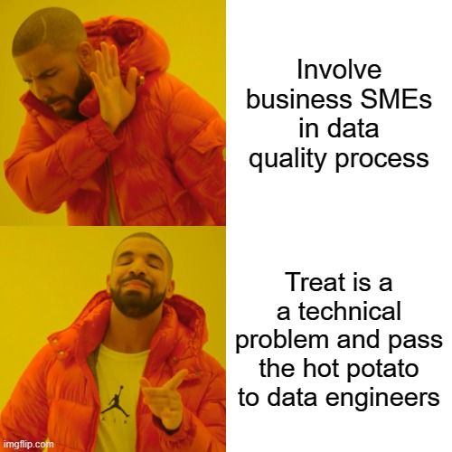

Repost Linkedin : https://www.linkedin.com/posts/yacine-bekka_dataquality-datamanagement-digital-activity-7034069227783249920-JuHr?utm_source=share&utm_medium=member_desktop
Hey, it is well-known that data quality is not a big deal, right… ?
So let’s look at 6 tips together to make sure it doesn’t improve :
- Treat data quality as a technical problem only
-
Use only technical solutions to improve it (e.g., software, probabilistic controls, etc.).
-
Do not involve business SMEs (data producers, data consumers) to ensure that data quality management is as far from business priorities as possible and that they do not understand it.
- Do not use common and clear guidelines for data quality management
-
Stress everyone in the company about bad data quality and that it’s their job to improve it.
-
Do not define any systematic process for data quality management or any guidelines.
- Focus only on theoritical aspects
-
Make sure to have all data quality dimensions quoted in the literature (60+) covered by your data quality process.
-
Make your process documentation highly complicated and full of jargon. This way, nobody will be able to contribute to it or understand the meanings and methodology of indicators.
- Perform only data corrections, root cause don’t matters that much
-
Focus all effort on data correction and firefighting quality issues where the “symptoms” occur.
-
Forget about root cause analysis and a holistic view of why we have an issue. It’s completely unnecessary.
- Treat all quality issue as the same no matter the business impacts
-
The real business impact of quality issues is irrelevant; make sure not to prioritize the high impact ones.
-
In fact, to save time, you can just not assess the impact of quality issues and use instead the “wet-finger” prioritization technique
- Launch isolated data quality projects
-
By avoiding a common and continuous approach, you ensure information loss and prevent follow-through of the issues previously identified.
-
It also helps to create or reinforce existing silos in the company, which is always a good thing, especially when it comes to data.
